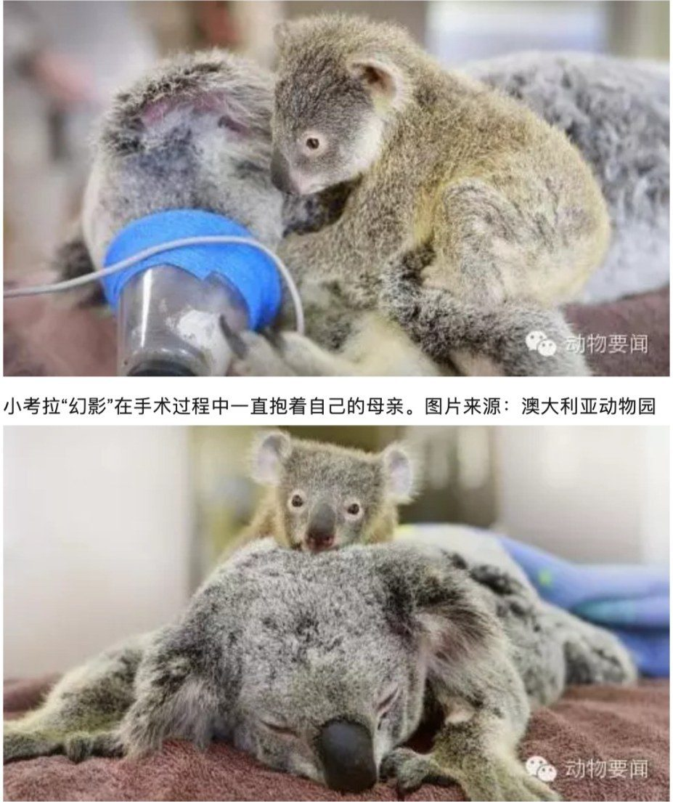

← 回到首页 第 010 期 · 2015年6月10日 · 暖闻 考拉妈妈接受手术 小考拉紧抱母亲不肯离开 据外媒报道，日前一只被车撞到的考拉在澳大利亚动物园接受手术，它的宝宝在手术过程中一直抱着母亲不肯松开。 丽兹和它的宝宝幻影在昆士兰州被车撞到，幻影奇迹般毫发无损，丽兹肺部微萎缩，被送到澳大利亚动物园接受手术。 整个手术过程中，幻影一直紧紧抱着自己的母亲。丽兹手术成功，目前正在恢复中，幻影一直没有离开她的身边。 手术全程，幻影都抱着妈妈。 转自腾讯新闻 · 图 · 澳大利亚动物园